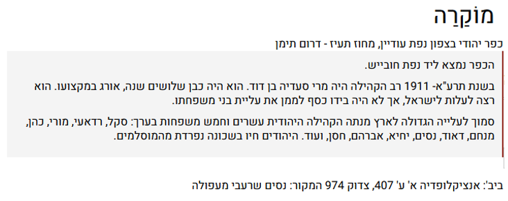
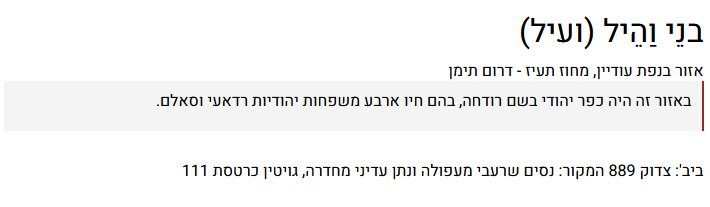
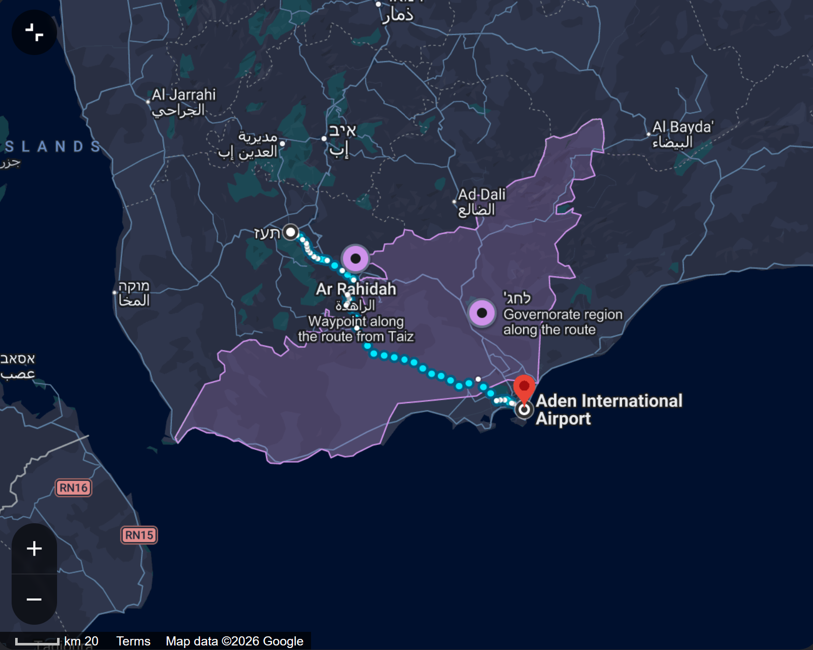

מבצע על כנפי נשרים
"מבצע על כנפי נשרים" (מוכר גם כמבצע מרבד הקסמים או מבצע ביאת המשיח) הוא מבצע היסטורי של מדינת ישראל שנערך בשנים 1949–1950 להעלאת כ-50,000 יהודים מתימן (ומעט מאריתריאה) לארץ ישראל ברכבת אווירית.
שם המבצע לקוח מספר שמות, פרק י"ט, פסוק ד': "וָאֶשָּׂא אֶתְכֶם עַל כַּנְפֵי נְשָׁרִים, וָאָבִא אֶתְכֶם אֵלָי".
היהודים מרחבי תימן עשו דרך רגלית קשה ומסוכנת אל מחנה מעבר בשם "גאולה" שליד העיר עדן.
את הטיסות ביצעו חברות התעופה "אל על" ואלסקה איירליינס, עבור רוב המוחלט של העולים זו הייתה הפעם הראשונה שבה ראו מטוס.
ההיסטוריה של יהדות תימן היא ארוכה. אחת הסברות היא שראשית ההתיישבות היהודית בתימן הייתה לאחר חורבן בית המקדש הראשון.
המקומות המרכזיים
המקומות המרכזיים המתווים את נתיב המסע והקליטה של מבצע "על כנפי נשרים":
נקודות היציאה בתימן: צנעא וקהילות תימן: העולים יצאו ממאות כפרים וערים ברחבי תימן, והחלו במסע רגלי מפרך ומסוכן דרומה.
המסע הרגלי
התוואי המסע הרגלי שעשו המשפחות בתוך תימן אל עבר עדן.
המסע הרגלי של יהודי תימן אל עבר העיר עדן היה אחד הפרקים המפרכים והרואיים ביותר במבצע. בהיעדר תשתית תחבורה מסודרת ובשל האיסור של האמאם על נסיעה ישירה, רוב המשפחות נאלצו לחצות מאות קילומטרים ברגל, כשהן נושאות את מעט רכושן וספרי תורה על גבן.
צירי התנועה המרכזיים
העולים יצאו ממאות כפרים וערים ברחבי תימן, והתנקזו לשלושה נתיבים עיקריים שנעו מצפון וממרכז המדינה כלפי דרום:
- הציר ההררי המרכזי (מאיזור צנעא): יציאה מהבירה צנעא וסביבתה, תנועה דרומה דרך ערי השדרה ההררית כמו ד'מאר וירִים, ומשם ירידה לכיוון תעז ועדן. זה היה הציר המאוכלס ביותר.
- הציר הצפוני (מחוז צעדה): הקהילות המבודדות ביותר בצפון הרחוק (כמו צעדה וחיידאן) עברו את הדרך הארוכה ביותר — הן נעו דרומה לאורך מאות קילומטרים בתוואי הררי קשה עד שהתחברו לציר המרכזי.
- הציר הדרום-מזרחי (מחוז חבאן): יהודי חבאן נעו מאיזור מזרח תימן ישירות מערבה ודרומה לכיוון עדן, דרך נתיבים מדבריים למחצה.
הקשיים והסכנות
- תנאים גיאוגרפיים: המסלול כלל חציית רכסי הרים תלולים וגבוהים (הרי תימן), ולאחר מכן מעבר באזורים מדבריים חמים ויבשים.
- סחיטה ומסרנים: לאורך הדרך, שליטים מקומיים ושבטים בדואים הקימו תחנות מכס פיראטיות. העולים נאלצו לשלם סכומי עתק כדי שיאפשרו להם להמשיך. רבים הגיעו לעדן חסר כל.
- רעב ומחלות: האספקה שהמשפחות לקחו איתן אזלה במהירות. המחסור במים נקיים ובמזון, לצד התשישות הפיזית, הובילו להתפרצות מחלות (כמו טיפוס ודיזנטריה).
- הפחד מהשלטונות: רבות מהקהילות יצאו לדרך בחשאי ונעו בעיקר בלילות כדי להימנע ממעצר.
המסע הסתיים ברגע שהעולים חצו את הגבול של "שמורה בריטית" (פרוטקטורט עדן), שם פגשו אותם שליחי הסוכנות היהודית והג'וינט והעבירו אותם במשאיות אל מחנה "גאולה" (חאשד).
הטיסות הסודיות
מבצע הטיסות, שזכה לשם הקוד "מבצע מרבד הקסמים", היה פצע טכנולוגי ולוגיסטי חסר תקדים. הטיסות התנהלו תחת מעטה כבד של סודיות ומורכבות פוליטית ובטחונית עצומה.
בשל כך שמדינות כמו ערב הסעודית, מצרים ועבר הירדן אסרו על המטוסים לחצות את מרחבן האווירי, הטייסים אולצו לטוס במסלול בינלאומי צר ומדויק שעבר ישירות מעל המים הבינלאומיים של הים האדום.
עיקר הנטל הלוגיסטי נפל על חברת התעופה האמריקאית "אלסקה איירליינס". המטוסים — מדגמי דאגלס C-54 ו-Curtiss C-46 — נשאו לעיתים קרובות בין 120 ל-150 עולים במקום 50. בסך הכל נערכו כ-430 טיסות.
הקליטה במחנה ראש העין
כשהמטוסים נחתו בשדה התעופה בלוד, העולים הועברו ישירות אל מחנה ראש העין — מחנה העולים הגדול ביותר שהוקם עבור הקהילה התימנית. בחורף 1949–1950 פקד את ישראל אירוע שלג היסטורי נדיר, וסבל נורא פקד את העולים שהגיעו מאקלים חם.
למרות השנים הראשונות והקשות באוהלים ובצריפים, מחנה ראש העין הפך בהדרגה לשכונות מגורים מסודרות, ולימים לעיר משגשגת ומרכז תרבותי ומורשתי ליהדות תימן בישראל.
מחנה "גאולה" חאשד
מחנה "גאולה" (שנודע בפי המקומים והעולים כמחנה חאשד, Hashed) היה הלב הפועם של מבצע "על כנפי נשרים". הוא שימש כמחנה המעבר המרכזי והיחיד שדרכו עברו כמעט כל 50,000 יהודי תימן בדרכם לישראל.
המחנה הוקם וממומן על ידי ארגון הג'וינט (AJDC) ובשיתוף הסוכנות היהודית, והוא פעל בחסות השלטון הבריטי ששלט אז בעדן.
מיקום גיאוגרפי
המחנה הוקם בלב אזור מדברי שומם ולוהט, במרחק של כ-20 קילומטרים מנמל העיר עדן. המיקום נבחר בשל קרבתו (כ-4–5 ק"מ) לשדה התעופה הבינלאומי של עדן, ממנו המריאו מטוסי המבצע לישראל.
כיום, השטח המדברי שבו שכן המחנה נבלע לחלוטין בתוך הפיתוח העירוני של עדן המודרנית.
הלחץ הדמוגרפי
המחנה תוכנן לקלוט כ-1,500 עד 2,000 איש בו-זמנית. בפועל, בשיא המבצע (שלהי 1949), שהו במחנה בין 12,000 ל-14,000 בני אדם בו-זמנית, דבר שחולל משבר לוגיסטי והומניטרי עצום.
האתגר הרפואי
העולים הגיעו לחאשד לאחר שבועות של צעידה ברגל, סובלים מתשישות קיצונית, רעב ומחלות קשות (בעיקר מלריה, טיפוס הבטן, דיזנטריה ותת-תזונה). מספר קטן של רופאים ואחיות נלחמו מסביב לשעון בתנאים סטריליים אפסיים.
כל עולה שהגיע עבר חיטוי (ריסוס בדי-די-טי) וקיבל בגדים נקיים. למרות המאמצים, מאות עולים — מרביתם תינוקות וילדים קטנים — נפטרו במחנה.
החיים הקהילתיים
למרות התנאים הפיזיים הקשים, המחנה התנהל בסדר מופתי וברוח רוחנית גבוהה. הנהלת המחנה העניקה לרבנים ולראשי הקהילות התימניות את הסמכות לנהל את חיי הדת. הוקמו בתי כנסת באוהלים, נשחט בשר כשר, ונשמרו השבתות והחגים.
שליחי הסוכנות הקימו רשת חינוך מאולתרת. רגע השיא הקהילתי בכל יום היה הקראת השמות ברמקולים — מי שעלה בגורל הועלה על משאיות שנסעו לשדה התעופה בדרך אל המטוס לישראל.
המבצע הסתיים רשמית בסתיו 1950, אז נסגר המחנה לאחר שרוקן לחלוטין מיושביו.
היכן ניתן למצוא צילומים
- ארכיון הג'וינט (JDC Archives): אלפי תמונות דיגיטליות באיכות גבוהה. חיפוש: Aden / Hashed / Operation Magic Carpet.
- הארכיון הציוני המרכזי: תצלומי השליחים הרשמיים של הסוכנות היהודית במחנה.
- הספרייה הלאומית: חיפוש "מחנה חאשד" או "מבצע מרבד הקסמים".
- YouTube: סרטי יומני חדשות מקוריים (British Pathé). חיפוש: "מחנה חאשד" או "מבצע על כנפי נשרים ארכיון".
תיאור משוער של המסלול

מסלול ההליכה ההיסטורי המשוער מאזור תעז (Taiz) שבדרום-מערב תימן ועד למחנה גאולה (חאשד) שליד עדן מייצג מרחק הליכה של כ-180 עד 200 קילומטרים, דרך תוואי שטח מאתגר במיוחד.
שלבי המסלול
- נקודת המוצא — תעז והכפרים סביבה: אזור תעז ממוקם בגובה של כ-1,300 מטרים מעל פני הים. העולים שיצאו מהכפרים סביבה החלו את המסע בירידה מרכס ההרים הגבוה לכיוון דרום-מזרח.
- הציר ההררי והירידה למישור (דרך א-ראהדה): הנתיב המסורתי נע מתעז דרומה דרך העיירה א-ראהדה (Ar Rahidah). קטע זה אופיין בשבילים הרריים מפותלים, שם נתקלו המשפחות בתחנות המכס המקומיות ובשבטים שגבו מהם כספים.
- חציית מחוז לאחג' (Lahij): לאחר היציאה מהאזור ההררי, המסלול נכנס אל מישור חוף צחיח וחם יותר. ההליכה כאן הפכה למאבק מול חום המדבר, סופות חול ומחסור חמור במים נקיים.
- קו הסיום — שייח' עות'מאן ומתחם אל-מנסורה (עדן): עם חציית הגבול הבריטי, הגיעו העולים לפאתי העיר עדן, באזור שייח' עות'מאן. משם הועברו למתחם אל-מנסורה, השטח המדברי שבו הוקם מחנה חאשד — במרחק קצר מאוד ממסלול הטיסה.
מדובר במסלול באורך של כ-185 קילומטרים של הליכה רצופה בתנאי שטח ואקלים קשים מאוד, שאותו חצו המשפחות.